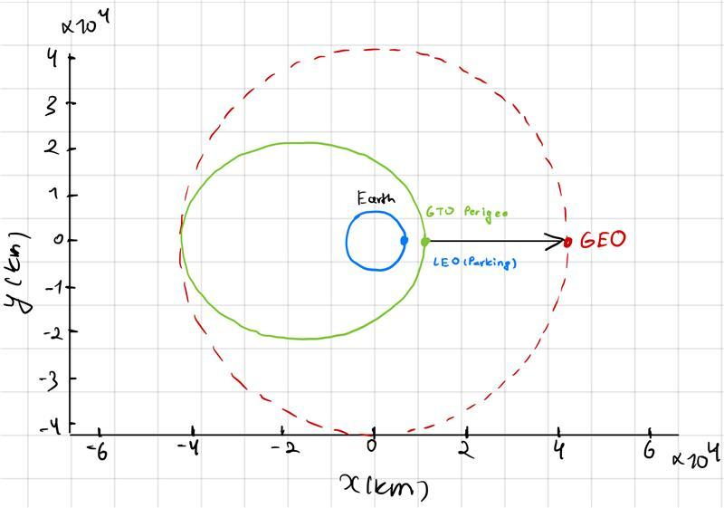
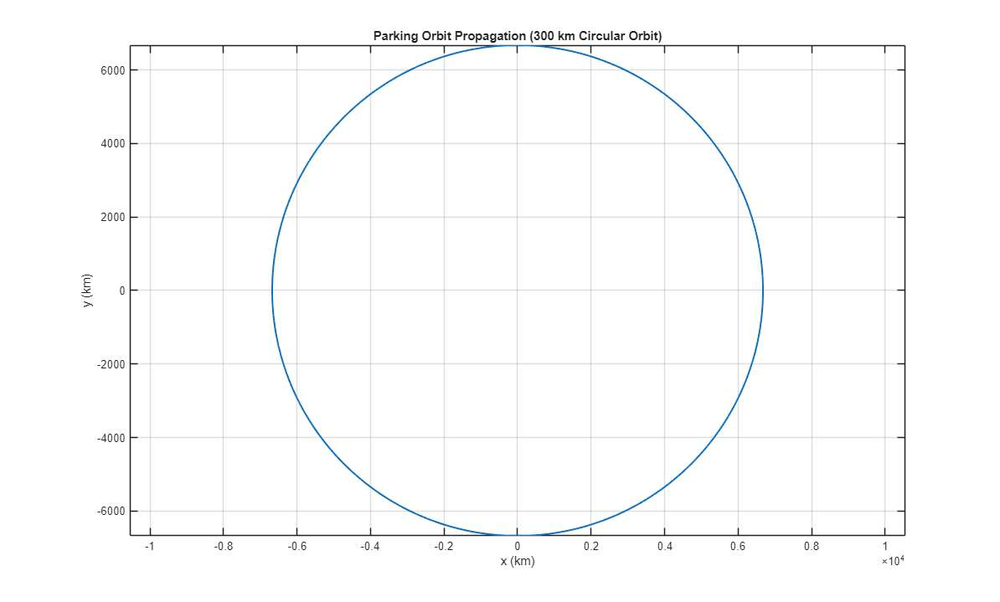
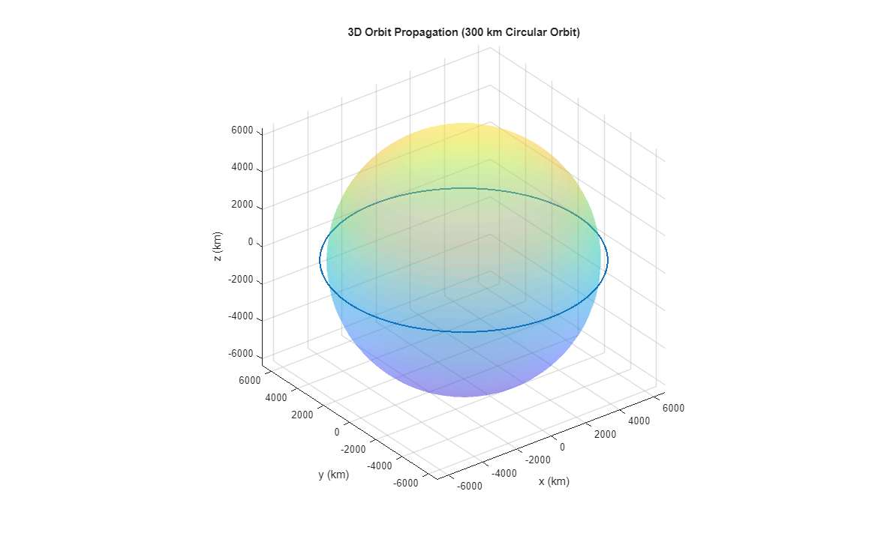
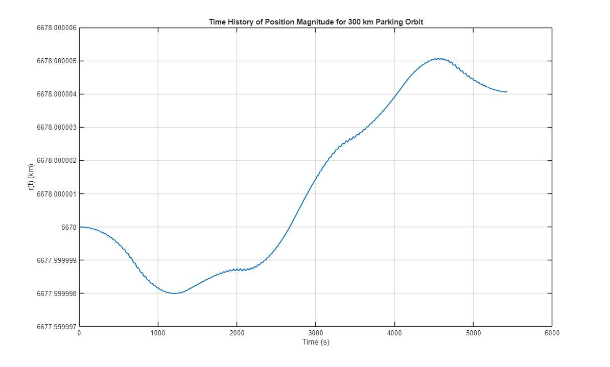
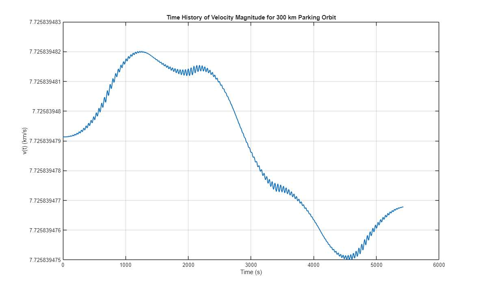
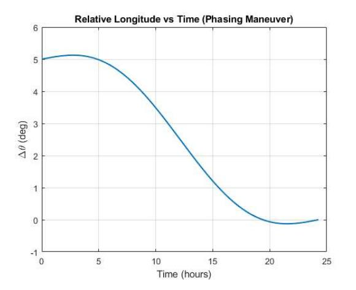

AE 313 · Space Mechanics · Fall 2025 · ERAU
Role
Team Member — Trajectory Design & Orbital Mechanics Analysis
AE 313: Space Mechanics · ERAU · Fall 2025
Tools
MATLAB · ode45 · Vis-Viva Equation
Tsiolkovsky Rocket Equation · Hohmann Transfer Theory
Key Contributions
ode45 at RelTol = AbsTol = 10−9NASA’s Tracking and Data Relay Satellite System (TDRS) provides continuous communication links between LEO spacecraft — including the International Space Station and Hubble Space Telescope — and ground networks. Reaching the geostationary belt at 35,786 km altitude from a 300 km parking orbit demands a carefully sequenced multi-burn ascent that consumes the overwhelming majority of a spacecraft’s propellant. This project simulated the complete orbital trajectory and maneuver sequence for a TDRS-M-class spacecraft, analyzed the full Δv and mass budget, and designed a longitudinal phasing correction at GEO.
ode45
The spacecraft begins in a 300 km circular equatorial parking orbit at r0 = RE + 300 = 6678 km. Circular velocity follows directly from Earth’s gravitational parameter μE = 398,600.418 km3/s2:
Vcirc = √(μ/r0) = 7.73 km/s
Starting from the Cartesian state r(0) = [6678, 0, 0] km and v(0) = [0, 7.73, 0] km/s, I integrated the two-body equations of motion for exactly one orbital period T = 2π√(r03/μ) = 5400 s using MATLAB’s ode45 at RelTol = AbsTol = 10−9. The Classical Orbital Elements for this phase: a = 6678 km, e = 0, i = 28.5°, Ω = 0°, ω = 0°, θ = 0°.




A Hohmann transfer ellipse connects the parking orbit at rp = 6678 km to GEO altitude at ra = 42,164 km. I applied the vis-viva equation at both endpoints of the transfer orbit:
v = √[μ(2/r − 1/a)]
This first burn is the most energetically demanding maneuver of the entire mission, consuming 45% of the total Δv budget in a single impulsive firing at LEO perigee.
At transfer apogee (r = 42,164 km), the spacecraft must both circularize its orbit and reduce inclination from 28.5° to 0°. Performing the plane change here — where the spacecraft velocity is at its minimum of 3.07 km/s — is the mission-critical sequencing decision. The same 28.5° inclination reduction performed at LEO perigee (v = 10.15 km/s) would cost approximately 5.00 km/s, making the propellant budget completely infeasible.
The two burns at GEO apogee were analyzed separately:
Δvcirc = VGEO − Va,t = 3.07 − 1.61 = 1.46 km/s
Δvinc = 2 VGEO sin(Δi / 2) = 2(3.07) sin(14.25°) = 1.50 km/s
Total mission Δv: 2.42 + 1.46 + 1.50 = 5.36 km/s.
Propellant mass was estimated using the Tsiolkovsky Rocket Equation with m0 = 3500 kg, Isp = 320 s (Ve = Isp · g0 = 3.139 km/s):
m0 / mf = eΔv/Ve = e5.36/3.139 = 5.53 → mf = 633 kg, mp = 2867 kg (82%)
With both spacecraft in GEO, an interceptor leading its target by Δθ0 = 5° in longitude needs to slow its drift rate and allow the target to catch up. The strategy is to raise the interceptor into a phasing ellipse with a slightly longer period. The required phasing orbit semi-major axis satisfies:
Tphase / TGEO = 1 + Δθ / 2π
Computed phasing orbit parameters:
Numerical propagation using ode45 tracked both spacecraft simultaneously in the ECI frame, confirming that the relative longitude decreased smoothly from 5° to 0° over the 24.3-hour window.

Δv Budget Summary:
| Maneuver | Δv (km/s) | Details |
|---|---|---|
| LEO → GTO injection | 2.42 | 7.73 → 10.15 km/s at LEO perigee |
| GEO circularization | 1.46 | 1.61 → 3.07 km/s at GEO apogee |
| 28.5° plane change | 1.50 | Performed at apogee; perigee equivalent ≈ 5.00 km/s |
| Total | 5.36 | — |
Simulation vs. Real TDRS-M (2017):
| Parameter | This Simulation | Real TDRS-M |
|---|---|---|
| Total spacecraft Δv | 5.36 km/s | ~2.0 km/s |
| Propellant fraction | 82% | 42% (R-4D engine, Isp = 312 s) |
| GTO type | Standard 28.5° GTO | Supersynchronous (26.2°, perigee 4700 km) |
| Inclination reduction | Full 28.5° by spacecraft | Mostly by Delta IV M+ launch vehicle |
| Plane change Δv | 1.50 km/s | <0.5 km/s |
The ~2.7× gap in spacecraft Δv between this simulation and the real mission is not an error — it is a deliberate consequence of the analysis scope. Real GEO missions off-load the bulk of inclination reduction to the launch vehicle through a supersynchronous GTO injection profile. By forcing the spacecraft to carry out every maneuver from scratch, this analysis isolates exactly how much each burn costs and why launch vehicle selection is the dominant driver of propellant budget on any GEO mission.
Always perform plane changes at apogee.
The 28.5° inclination reduction cost 1.50 km/s at GEO vs. ~5.00 km/s at LEO perigee — a 3.5 km/s saving from a single sequencing decision. This principle is fundamental to every GEO mission trajectory design.
Launch vehicles do the heavy lifting.
TDRS-M’s Delta IV M+ absorbed most of the inclination reduction through a supersynchronous GTO, cutting the spacecraft’s propellant fraction from 82% to 42%. The injection profile is just as important as the onboard propulsion system.
Phasing orbits are remarkably fuel-efficient.
Correcting a 5° longitude error cost only 0.028 km/s — less than 0.6% of total mission Δv. This efficiency makes phasing the standard technique for GEO slot acquisition, satellite repositioning, and on-orbit rendezvous.
Solver tolerance discipline matters.
Setting ode45 to RelTol = AbsTol = 10−9 held position error below 10−5 km over 5400 seconds. That same rigor is what separates a preliminary-design simulation from one that can actually feed a propellant budget calculation.